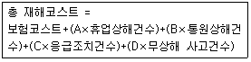
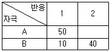
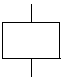
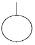
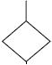
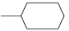
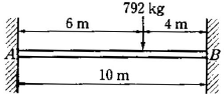
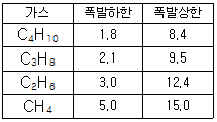
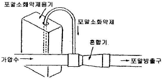
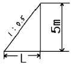

산업안전기사 (2004-09-05 기출문제)
1과목: 안전관리론
1. 작업 전 5분간 미팅의 시나리오를 작성하여 그 시나리오를 보고 멤버들이 연기함으로써 체험학습을 시키는 것은?
- Role playing
- Brain storming
- Action playing
- Fish Bowl playing
(정답률: 79%)

2. 부주의가 발생하는 현상이 아닌 것은?
- 의식의 단절
- 의식의 우회
- 의식 수준의 저하
- 의식의 집중
(정답률: 77%)
3. 산업안전보건법에서 정하고 있는 안전에 관한 교육내용 중 채용시 및 작업내용 변경시의 교육내용에 해당되지 않는 것은?
- 기계ㆍ기구의 위험성과 작업의 순서 및 동선에 관한 사항
- 사고 발생 시 긴급조치에 관한 사항
- 작업안전지도 요령에 관한 사항
- 물질안전보건자료에 관한 사항
(정답률: 58%)
4. 단위 작업마다의 사용재료, 사용설비, 작업자, 작업조건, 작업방법, 작업의 관리, 이상시의 조치 등을 규정하는 것은?
- 공정 보고서
- 기술 표준서
- 작업 지도서
- 공정 계획서
(정답률: 44%)
5. 안전점검표(Check list) 판정 기준에 어긋나는 것은?
- 대안과 비교하여 양부를 판정한다.
- 한 개의 절대 척도나 상대 척도에 의할 때는 수치로 나타낸다.
- 미경험 문제나 복잡하게 예측되는 문제 등은 독단적으로 판정한다.
- 복수의 절대 척도나 상대 척도로 조합된 문항은 기준점 이하로 나타낸다.
(정답률: 84%)
6. "경부선 하행 열차를 타고 있는데 똑같은 역에 정차해 있던 상행선 열차가 갑자기 움직이면 우리는 타고 있던 우리의 하행선 열차가 움직인 것 같은 착각을 하게 된다." 이 와 같은 현상을 무엇이라 하는가?
- 유도운동
- 자동운동
- 가현운동
- 브라운운동
(정답률: 54%)
7. 다음 중 신체지지의 목적으로 전신에 착용하는 것으로 높은 곳에서 추락을 방지하기에 사용되는 보호구는?
- 벨트식
- 안전블록
- 추락방지대
- 안전그네식
(정답률: 60%)
8. "인간과오(Human error)에서 의지적 제어가 되지 않는다.""결정을 잘못한다." 등은 다음 어느 것에 해당되는가?
- 동작 조작 미스
- 기억 판단 미스
- 인지 확인 미스
- 사람과 환경조건의 영향
(정답률: 41%)
9. 다음 중 안전과 관련된 내용이다. 올바르게 설명된 것은?
- 안전의 4기둥인 4M은 Man(인간), Machine(기계), Material(물자), Management(관리)이다.
- 안전대책의 3E는 Engineering(기술), Education(교육), Enforcement(강제)이다.
- 미국의 Bird는 1:29:300법칙을 주장하였다.
- 분주하기 때문에 안전문제를 별도로 생각할 수 없다는 사람은 생산과 안전을 동일시하고 있다.
(정답률: 49%)
10. 다음 중 업무가 수행되고 있는 작업환경 및 작업조건과 관계되는 것을 설명하는 것은?
- 위생요인
- 동기부여 요인
- ERG이론
- XㆍY이론
(정답률: 24%)
11. 내전압용 절연장갑은 등급에 따라 규정지어진다. 교류 500V 또는 직류 750V 이하의 작업에서 사용하는 내전압용 절연장갑의 등급은 다음 중 어느 것인가？
- 00등급
- 0등급
- 3등급
- 4등급
(정답률: 55%)
12. 안전교육 평가의 과정을 설명할 것 중 관계가 적은 것은?
- 확실한 평가 목적이 최우선이다.
- 평가 장면의 선정은 성취 또는 습득의 증거가 나타난 장면을 선정한다.
- 평가도구 제작 및 선정은 참고자료로서 기초자료에 해당된다.
- 평가를 실시할 때는 시기, 장소, 횟수, 대상, 종류, 방법 등을 고려하여야 한다.
(정답률: 29%)
13. 다음 각종 감각에 주어야할 연결이 잘못 된 것은?
- 지각 - 감시적 역할
- 청각 - 연락적 역할
- 피부감각 - 경보적 역할
- 취각 - 조절적 역할
(정답률: 52%)
14. 시행 착오설에 의하면 "학습이란 맹목적인 시행을 되풀이 하는 가운데 자극과 반응의 결합의 과정이다."로 정의하고 있다. 다음 중 시행 착오설에 의한 학습의 원칙이 아닌 것은?
- 연습의 법칙
- 효과의 법칙
- 동일성의 법칙
- 준비성의 법칙
(정답률: 35%)
15. 어느 작업장의 공기 중 사염화탄소의 농도가 0.2% 인 곳에서 근로자가 착용한 정화통의 흡수능력이 CCl4 0.5%에 대하여 100분이라 할 때 방독 마스크 정화통의 유효시간은 얼마인가?
- 200분
- 250분
- 300분
- 350분
(정답률: 66%)
16. 시몬즈(Simonds)의 재해코스트 산출방식에서 A, B, C, D는 무엇을 뜻하는가?

- 직접손실비
- 간접손실비
- 보험 코스트 평균치
- 비보험 코스트 평균치
(정답률: 68%)
17. 강의법에 대한 설명 중 해당되지 않는 것은?
- 다량의 사실을 체계적으로 전달 할 수 있다.
- 다수를 대상으로 동시에 가르칠 수 있다.
- 현실과 동떨어진 지식위주에 빠질 수 있다.
- 전체적인 전망을 제시하는데 불리하다.
(정답률: 58%)
18. 자신의 동기(motive)에 대해서 불안을 느끼는 사람은 무의식적으로 내면의 동기를 자기자신 및 사회가 용납할 수 있는 다른 동기로 변형하는 방어기제는?
- 억압
- 승화
- 합리화
- 동일시
(정답률: 39%)
19. 어떤 기능이나 작업과정을 학습시키기 위해 필요로 하는 분명한 동작을 제시하는 교육방법은?
- 시범
- 토의법
- 강의법
- 자율학습
(정답률: 78%)
20. 동기부여이론 중 데이비스(K.Davis)의 이론은 동기유발(motivation)을 등식으로 표현하였다. 옳은 것은?
- 지식(knowledge)×기능(skill)
- 능력(ability)×태도(attitude)
- 상황(situation)×태도(attitude)
- 인간의 성과(human performance)×기능(skill)
(정답률: 61%)
2과목: 인간공학 및 시스템안전공학
21. 양립성(compatibility)의 종류가 아닌 것은?
- 개념
- 공간
- 동작
- 인지
(정답률: 56%)
22. 다음 중 청각 장치와 시각장치의 사용에 경우 시각장치를 사용해야하는 경우는?
- 전언이 간단할 때
- 전언이 공간적인 위치를 다룰 때
- 전언이 후에 재참조되지 않을 때
- 전언이 즉각적인 행동을 요구할 때
(정답률: 56%)
23. 시스템 안전분석법 중 예비위험분석의 식별된 4가지 사고 카테고리에 해당되지 않는 것은?
- 선별적 상태
- 중대 상태
- 무시가능 상태
- 파국적 상태
(정답률: 54%)
24. Q10 효과에 직접적인 영향을 미치는 인자는?
- 고온 스트레스
- 한랭한 작업장
- 분진의 다량발생
- 중량물 취급
(정답률: 36%)
25. 다수 부품으로 구성되는 체계의 신뢰도를 높이기 위하여 설계단계에서 사용하는 방법은?
- ZD 운동의 전개
- 품질관리의 철저
- 신뢰도가 높은 부품의 활용
- 병렬 다중성(Redundancy)의 활용
(정답률: 50%)
26. 자극과 반응의 실험에서 자극 A가 나타날 경우 1로 반응하고 자극 B가 나타날 경우 2로 반응하는 것으로 하고, 100회 반복하여 표와 같은 결과를 얻었다. 제대로 전달된 정보량을 계산하면?

- 1.000
- 0.610
- 0.971
- 1.361
(정답률: 43%)
27. 청각 표시장치에서 경계 및 경보신호를 선택설계 할 때에 지침을 잘못 이해한 것은 어느 것인가?
- 귀는 중음역에 가장 민감하므로 500~3000Hz가 좋다.
- 장거리용 신호에는 500Hz 이하의 진동수를 사용한다.
- 칸막이를 돌아가는 신호는 500Hz 이하의 진동수를 사용한다.
- 배경소음과 다른 진동수를 갖는 신호를 사용한다.
(정답률: 50%)
28. 수동 조작구를 조작할 때 적합한 작업자의 팔꿈치 각도는?
- 60~100°
- 45~85°
- 90~135°
- 135~180°
(정답률: 36%)
29. 일반적인 FTA는 계산을 간략화 하기 위해 몇 가지 기본적인 가정을 전제로 한다. 다음 중 이에 해당하지 않는 것은?
- 중복사상은 없어야 한다.
- 기본사상들의 발생은 독립적이다.
- 모든 기본사상은 정상사상과 관련되어 있다.
- 기본사상의 조건부 발생확률은 이미 알고 있다.
(정답률: 22%)
30. 작업공간을 설계할 때 위팔을 자연스럽게 수직으로 늘어뜨린 채 아래팔만으로 편하게 뻗어 파악할 수 있는 구역을 고려하여야 한다. 이 구역을 바르게 지칭한 것은?
- 정상 작업역
- 최대 작업역
- 파악 한계
- 작업공간 포락면
(정답률: 40%)
31. 열대기후에 순화된 사람은 시간당 최고 4kg까지의 땀을 흘릴 수 있다. 땀 4kg의 증발로 잃을 수 있는 열은? (단, 증발열은 2410J/g이다)
- 116 wat
- 161 watt
- 2678 watt
- 9640 watt
(정답률: 25%)
32. 다음 중 Man-Machine system의 주목적은?
- 경제성과 보전성
- 신뢰성 향상
- 피로의 경감
- 안전의 최대화와 능률의 극대화
(정답률: 75%)
33. 고장 수목분석(FTA)도를 작성하는데 사용되는 기본사상(Basic Event)의 기호는?




(정답률: 57%)
34. 안전성 평가는 6단계 과정을 거쳐 실시되는데 이에 해당되지 않는 것은?
- 작업 조건의 측정
- 정성적 평가
- 안전대책
- 관계자료의 정비검토
(정답률: 52%)
35. 점멸-융합(flicker-fusion)의 용도는 다음 중 어느 것인가?
- 야간 시력의 척도
- 반응 시간의 척도
- 피로 정도의 척도
- 레이더(radar)를 볼 수 있는 능력의 척도
(정답률: 52%)
36. 인간이 기계에 비하여 우수한 기능 중 틀린 것은?
- 수신 상태가 나쁜 음극선관에 나타나는 영상과 같이 배경잡음이 심한 경우에도 신호를 인지한다.
- 항공 사진의 피사체나 말소리처럼 상황에 따라 변화하는 복잡한 자극의 형태를 식별한다.
- 암호화된 정보를 신속하게 또 대량으로 보관한다.
- 관찰을 통해서 일반화하여 귀납적으로 추리한다.
(정답률: 66%)
37. FTA에서 시스템의 안정성을 정량적으로 평가할 때, 이 평가에 포함되는 5개 항목에 대한 위험점수가 합산해서 몇점 이상이면 FTA를 다시 하게 되는가?
- 10점 이상
- 14점 이상
- 16점 이상
- 20점 이상
(정답률: 37%)
38. 예비위험분석(PHA)의 목적으로 알맞는 것은?
- 시스템의 구상단계에서 시스템 고유의 위험상태를 식별하여 예상되는 위험수준을 결정하기 위한 것이다.
- 시스템에서 사고위험성이 정해진 수준이하에 있는 것을 확인하기 위한 것이다.
- 시스템내의 사고의 발생을 허용레벨까지 줄이고 어떠한 안전상에 필요사항을 결정하기 위한 것이다.
- 시스템의 모든 사용단계에서 모든 작업에 사용되는 인원 및 설비 등에 관한 위험을 분석하기 위한 것이다.
(정답률: 64%)
39. 일정한 고장률을 가진 어떤 기계의 고장률이 0.004/시간일 때 10시간 이내에 고장을 일으킬 확률은?
- 1 + e0.04
- 1 - e-0.004
- 1 - e0.04
- 1 - e-0.04
(정답률: 25%)
40. 착석식 작업대의 높이 설계를 할 경우에 고려해야 할 사항과 관계가 먼 것은?
- 의자의 높이
- 작업대의 두께
- 대퇴여유
- 작업대의 형태
(정답률: 42%)
3과목: 기계위험방지기술
41. 셰이퍼의 안전작업이 아닌 것은?
- 보안경을 착용한다.
- 탭조정 핸들은 조절 후 제거 한다.
- 재질에 따라 절삭속도를 결정한다.
- 램 행정을 공작물길이보다 20~30mm 작게 한다.
(정답률: 54%)
42. 그림과 같이 길이 10m인 양단 고정단 A, B에 집중하중이 작용할 때 B의 고정단에 생기는 굽힘모멘트는 약 얼마인가?

- 980kg·m
- 1140kg·m
- 1152kg·m
- 2880kg·m
(정답률: 29%)
43. 드릴의 작업안전수칙에 해당하는 것은?
- 정확한 작업을 위하여 구멍에 손을 넣어 확인한다.
- 비래를 방지하기 위하여 양손으로 견고히 잡는다.
- 손을 보호하기 위하여 목장갑을 장갑을 착용한다.
- 척 렌치(chuck wrench)를 척에서 반드시 뺀다.
(정답률: 53%)
44. 내부 반지름 500mm, 벽체 두께 30mm인 구형의 강재 압력용기가 지지할 수 있는 최대 허용 내부계기압은? (단, 강재의 허용인장응력은 60 MPa 이다.)
- 72 MPa
- 7.2 MPa
- 36 MPa
- 3.6 MPa
(정답률: 32%)
45. 기계설비의 안전화를 위해서는 기계, 장비 및 배관 등에 안전색채를 구별하여 칠해야 한다. 다음 중 알맞지 않은 것은?
- 시동단추식 스위치 : 녹색
- 정지단추식 스위치: 적색
- 가스배관 : 황색
- 물배관 : 백색
(정답률: 61%)
46. 다음 중 선반 작업에 사용되는 방호장치는?
- 실드(shield)
- 풀 아우트(full out)
- 게이트 가드(gate guard)
- 스위프 가드(sweep guard)
(정답률: 67%)
47. 그리스(Grease)의 구비조건으로 틀린 것은?
- 방청성
- 윤활성
- 휘발성
- 내온도성
(정답률: 55%)
48. 재료역학에서 안전계수라 함은 다음 중 무엇을 의미하는가?
- 극한강도를 비례한도로 나눈 값
- 극한강도를 탄성한도로 나눈 값
- 극한강도를 허용응력으로 나눈 값
- 극한강도를 항복점 응력으로 나눈 값
(정답률: 65%)
49. 안전계수 5인 체인의 정격하중이 100kg이라면 이 체인의 극한강도 몇 kg인가?
- 300
- 400
- 500
- 600
(정답률: 66%)
50. 굽힘가공에 있어서 중요한 기준이 되는 최소굽힘 반지름에 대한 설명 중 틀린 것은?
- 탄성한도가 높을수록 최소굽힘 반지름을 작게 하기 어려운 성질이 있다.
- 판폭이 넓을수록 최소굽힘 반지름이 작게 되는 경향이 있다.
- 판 두께가 증가할수록 최소굽힘 반지름이 증가하는 성질이 있다.
- 판굽힘 방향에 따라 최소굽힘 반지름의 값이 다른 성질이 있다.
(정답률: 37%)
51. 기계의 원동기, 회전축, 치차, 풀리, 플라이휠 및 벨트 등의 위험으로부터 작업자를 보호하기 위한 방지장치로 적당하지 않은 것은?
- 덮개
- 동력차단장치
- 슬리브
- 건널다리
(정답률: 31%)
52. 다음의 검사 방법 중에서 재질의 Crack여부를 검사하는 방법으로 적당하지 않은 것은?
- X-선 투과검사
- 핀홀 검사
- 자분 탐상검사
- 침투 탐상검사
(정답률: 47%)
53. 온도변화에 따른 파손을 방지하기 위한 이음은?
- 플랜지이음
- 나사이음
- 신축이음
- 용접이음
(정답률: 42%)
54. 기계의 부품에 작용하는 힘 중에서 안전율을 가장 작게 취하여야 할 힘의 종류는?
- 반복하중
- 교번하중
- 충격하중
- 정하중
(정답률: 52%)
55. 안전간극(Safe Gap)이란?
- 화염이 전파되지 않는 한계치(限界値)
- 화염방지기의 철망의 눈금크기
- 유류저장탱크 등의 어레스터(arrester)눈금
- 안전한 간극 즉 안전한 구멍
(정답률: 52%)
56. 지게차 헤드가드의 강도는 지게차의 최대하중의 2배의 값의 등분포정하중에 견딜 수 있어야 한다. 최대하중의 2배의 값이 8톤일 경우에 헤드가드의 강도는? (단, 단위는 톤이다.)
- 2
- 4
- 8
- 16
(정답률: 55%)
57. 양중기에 사용할 와이어로프의 사용금지 기준이 아닌 것은?
- 이음매가 있는 것
- 심하게 변형 또는 부식된 것
- 지름의 감소가 공칭지름의 5% 이상 인 것
- 한 꼬임에서 끊어진 소선의 수가 10%이상 인 것
(정답률: 63%)
58. 압력용기 등에 사용되는 압력방출장치에 관한 설명 중 맞는 것은?
- 사용시 월1회 이상 압력계(표준압력계)를 이용하여 토출 압력을 시험한다.
- 설치후 1주일에 1회이상 작동시험을 하여 성능이 유지될 수 있게 한다.
- 압력방출장치가 최고 사용압력 이후에 작동되게 설정한다.
- 직렬로 접속된 공기압축기에는 과압방지 압력 방출 장치를 각단마다 설치한다.
(정답률: 35%)
59. 기계 설비의 점검시 운전상태에서 점검 할 사항이 아닌 것은?
- 클러치 상태
- 기어의 교합상태
- 접동부 상태
- 나사, 볼트, 너트 등의 풀림상태
(정답률: 55%)
60. 다음 사항 중 아세틸렌 용접장치의 안전 조치로써 알맞은 것은?
- 아세틸렌 발생기로부터 3m 이내, 발생기실로부터 5m 이내에는 흡연, 화기 사용금지
- 아세틸렌 발생기로부터 3m 이내, 발생기실로부터 4m 이내에는 흡연, 화기 사용금지
- 아세틸렌 발생기로부터 4m 이내, 발생기실로부터 3m 이내에는 흡연, 화기 사용금지
- 아세틸렌 발생기로부터 5m 이내, 발생기실로부터 3m 이내에는 흡연, 화기 사용금지
(정답률: 45%)
4과목: 전기위험방지기술
61. 교류아크 용접기의 자동전격방지 장치는 무부하 시의 2차측 전압을 저전압으로 1.5초안에 낮추어 작업자의 감전 위험을 방지하는 자동 전기적 방호장치이다. 피용접재에 접속되는 접지공사와 자동전격방지장치의 주요 구성품은?
- 1종 접지공사와 변류기, 절연변압기, 제어장치, 전압계
- 2종 접지공사와 절연변압기, 제어장치, 변류기, 전류계
- 3종 접지공사와 보조변압기, 주회로 변압기, 전압계, 전류계
- 3종 접지공사와 보조변압기, 주회로 변압기, 제어장치
(정답률: 38%)
62. “0” 종 장소에 일반적으로 가장 많이 사용되는 방폭구조는?
- 유입 방폭구조(“o”)
- 내압 방폭구조(“d”)
- 본질안전 방폭구조(“ia”)
- 안전증 방폭구조(“e”)
(정답률: 50%)
63. 부도체의 대전방지를 위해서 사용하는 제전제 중 섬유의 균일부착성, 열안정성이 양호하고, 독성이 없어서 섬유의 원사에 사용되는 외부용 일시성 대전방지제는 다음 중 어느 ion계인가?
- 양(陽)ion
- 음(陰)ion
- 양(兩)ion
- 비(非)ion
(정답률: 51%)
64. 전폐형의 구조로 되어 있으며, 외부의 폭발성 가스가 내부로 침입해서 폭발을 하였을 때 고열가스나 화염의 협격을 통하여 서서히 방출시킴으로써 냉각되는 방폭구조는?
- 내압 방폭구조
- 유입 방폭구조
- 압력 방폭구조
- 안전증 방폭구조
(정답률: 43%)
65. 용량 500W의 전열기로 2L의 물을 20℃에서 100℃까지 온도를 높이는데 몇 분 걸리겠는가? (단, 전열기의 발생 열량의 80%만이 유효하게 이용된다)
- 26
- 27
- 28
- 29
(정답률: 24%)
66. 고압 활선 작업시 조치 사항 중 잘못된 것은?
- 접근 한계거리 유지
- 절연용 보호구 착용
- 활선작업용 기구 사용
- 절연용 방호용구 설치
(정답률: 27%)
67. 부도체의 대전은 도체의 대전과는 달리 복잡해서 폭발, 화재의 발생한계를 추정하는데 충분한 유의가 필요하다. 다음 중 그 유의사항이 아닌 것은?
- 대전 상태가 매우 불균일한 경우
- 대전량 또는 대전의 극성이 매우 변화하는 경우
- 부도체 중에 국부적으로 도전율이 높은 곳이 있고, 이것이 대전한 경우
- 대전하여 있는 부도체의 뒷면 또는 근방에 접지되지 않는 도체가 있는 경우
(정답률: 44%)
68. 누설전류가 흐르지 않았을 경우 누전화재 경보기가 경보를 발하였다. 원인으로서 옳지 않은 것은?(오류 신고가 접수된 문제입니다. 반드시 정답과 해설을 확인하시기 바랍니다.)
- 변류기의 2차측 배선이 단락되어 지락이 되었을 경우
- 변류기의 2차측 배선의 절연상태가 불량인 경우
- 전기적인 유도가 많을 경우
- 접지선이 2개 이상일 경우
(정답률: 20%)
69. 인체에 접촉되는 전압의 최저 허용전압을 50V로 하고, 인체 저항을 1250Ω으로 할 때 지속안전 전류는 몇 mA인가?
- 30
- 40
- 62.5
- 25
(정답률: 31%)
70. 감전사고시 전선이나 개폐기 터미널 등의 금속분자가 고열로 용융됨으로서 피부 속으로 녹아 들어가는 것은?
- 피부의 광성변화
- 전문
- 표피박탈
- 전류반점
(정답률: 50%)
71. 정전기 발생에 영향을 주는 요인에 대하여 잘못 기술하고 있는 것은?(오류 신고가 접수된 문제입니다. 반드시 정답과 해설을 확인하시기 바랍니다.)
- 접촉 면적이 크고 접촉압력이 높을수록 발생량이 많아진다.
- 물체 표면이 수분이나 기름으로 오염되면 발생량이 많아진다.
- 물체의 분리속도가 빠를수록 완화시간이 길어져서 발생량은 많아진다.
- 정전기의 발생은 처음 접촉 분리할 때가 최대로 되고 접촉 분리가 반복됨에 따라 발생량도 감소한다.
(정답률: 37%)
72. 가스폭발위험장소분류 중 1종 장소란, 정상작동상태에서 인화성 액체의 증기 또는 인화성 가스에 의한 폭발위험 분위기가 존재하기 쉬운 장소이다. 그 예에 해당되는 것은?
- 용기의 내부
- 맨홀의 주위
- 개스킷의 주위
- 집진장치의 내부
(정답률: 30%)
73. 접지 저항 저감대책으로 적합하지 않는 것은?
- 병렬법
- 심타, 심공공법
- 접지극의 규격을 크게 한다.
- 토양을 개량, 도전율을 떨어뜨린다.
(정답률: 40%)
74. 전기기기의 절연저항은 여러 가지의 원인으로 그 저항값이 저하하는데 이 중 절연저항을 저하하는 요인 중 잘못된 것은?
- 높은 이상전압
- 온도상승
- 취급부주의
- 진동, 충격
(정답률: 28%)
75. 인체의 저항을 500[Ω]으로 볼 때 심실세동 전류에서의 에너지는 몇 주울[J]인가? (단, 통전시간 1초, 전원 정현파 교류)
- 13.6J
- 13J
- 11.5J
- 272.2J
(정답률: 63%)
76. 비도전성 유체가 파이프 속을 흐를 때 정전기가 발생되는데 유속과 정전기 발생과의 관계는 어떻게 되겠는가?
- 유속과는 무관하고 도전율의 0.64 제곱에 비례한다.
- 유속과는 무관하고 도전율이 크면 많이 발생한다.
- 유속의 1.5∼2.0 제곱에 비례한다.
- 유속이 작고 도전율이 커야 많이 발생한다.
(정답률: 44%)
77. 다음 허용 접촉 전압은 얼마인? (단, 심실 세동 전류 Ik=(0.116/√T)[A], 인체의 저항률(Rb) 1000[Ω], 지표상층저항(Rs)을 100[Ωm], 고정시간 T:1초 이다.)
- 123.4[V]
- 133.4[V]
- 143.4[V]
- 153.4[V]
(정답률: 39%)
78. 온도가 상승하는 경우 전기회로를 보호하기 위한 안전장치로 규정 분위기 온도에 녹아 끊어지도록 한 것이 온도 퓨즈이다. 온도퓨즈의 용단온도의 색분포와 일치하지 않는 것은?
- 백색 : 200℃
- 황색 : 150℃
- 적색 : 120℃
- 흑색 : 100℃
(정답률: 29%)
79. 절연성이 높은 유전성 액체를 다룰 때 정전기 재해의 방지 대책으로 옳지 않게 설명된 것은?
- 가스용기, 탱크로리 등의 도체부는 접지한다.
- 도전화를 착용하여 접지한 것과 같은 효과를 갖도록 한다.
- 유동대전이 심하지 않은 도전성 위험물의 배관 유속은 매초 7m 이상으로 한다.
- 탱크의 주입구는 위험물이 수평방향으로 유입하도록 한다.
(정답률: 50%)
80. 보호구성능검정규정에서 안전장갑의 성능시험 중 신장율은 몇 % 이상 이어야 하는가?
- 300%
- 400%
- 500%
- 600%
(정답률: 24%)
5과목: 화학설비위험방지기술
81. 인화성 가스 또는 증기의 폭발하한계와 상한계로 부터 위험도를 계산할 수 있으며, 이 위험도의 값이 큰 것일수록 위험성이 높다. 공기중에서의 수소의 폭발하한계가 4.0vol%이고, 상한계가 75vol% 이라면 수소의 위험도는 얼마인가?
- 18.75
- 71.00
- 17.75
- 12.50
(정답률: 49%)
82. 다음 중 광분해 반응을 일으키는 물질은?
- Ba(NO3)2
- Ca(NO3)2
- KNO3
- AgNO3
(정답률: 33%)
83. 다음 인화성 가스 혹은 증기에서 공기 중 최소 발화에너지 값이 가장 작은 물질은?
- CH2=CH2
- CH2=CHCH3
- CH4
- C2H6
(정답률: 28%)
84. 용적비로 메탄 70%, 프로판 21%, 부탄 9%의 혼합가스가 있다면 이 혼합가스의 공기중에서의 폭발범위는 용적비로 얼마인가? (단, 이들 가스의 공기중에서의 폭발범위는 표에서와 같다.)

- 약 3.45∼12.58%
- 약 3.45∼16.81%
- 약 4.29∼12.58%
- 약 4.29∼16.81%
(정답률: 29%)
85. 그림에 나타난 혼합장치는 포말소화 약제혼합 장치 중 어느 것에 해당되는가?

- 관로 혼합 장치
- 압력차 혼합 장치
- 펌프 혼합 장치
- 압력 혼합 장치
(정답률: 39%)
86. 탱크 내 작업시 복장의 설명 중 잘못된 것은?
- 작업원은 불필요하게 피부를 노출시키지 말 것
- 작업모를 쓰고 긴팔의 것을 반듯하게 착용할 것
- 작업복의 바지 속에는 밑을 집어넣지 말 것
- 유지가 부착된 작업복을 착용할 것
(정답률: 45%)
87. 사업주가 사용하는 화학물질에 대한 물질안전보건 자료를 작성하여 근로자가 쉽게 볼 수 있는 장소에 게시 또는 비치하여야 하는 사항에 해당되지 않는 것은?
- 제조업자의 명칭
- 인체 및 환경에 미치는 영향
- 안전ㆍ보건상의 취급주의 사항
- 대상화학물질의 명칭, 구성성분
(정답률: 49%)
88. 후압이 존재하고 증기압 변화량을 제어할 목적의 경우 어떠한 안전방출장치를 사용해야 하는가?
- 스프링식 안전 방출 장치
- 파열판식 안전 방출 장치
- 릴리프식 안전 방출 장치
- 밸로즈(bellows)식 안전 방출 장치
(정답률: 23%)
89. 다음 물질 중 조혈장해(백혈병)를 유발시킬 가능성이 있는 물질은?
- CH3OH
- C6H6
- C2H5OC2H5
- NaCN
(정답률: 28%)
90. 반응기 안전설계시 주요 인자와 관계가 먼 것은?
- 운전압력
- 온도범위
- 상(phase)의 형태
- 액 및 가스의 양의 비율
(정답률: 27%)
91. 다음 인화성 분체 중 다른 분진보다 화재발생 가능성이 크고 화재시 화상을 심하게 입는 것은?
- 탄닌
- 황가루
- 칼슘실리콘
- 폴리에틸렌
(정답률: 15%)
92. 다음 중 산화성 액체 및 산화성 고체 물질이 아닌 것은?
- KNO3
- NH4ClO3
- K2Cr2O7
- NH4Cl
(정답률: 38%)
93. NH4NO3의 가열, 분해로부터 제조되는 무색, 무취의 가스로서 웃음가스로 알려진 가스의 화학식은?
- N2O
- NO2
- N2O4
- NO
(정답률: 38%)
94. 다음 중 화학공정의 백업시스템(back-up system)에 속하지 않는 것은?
- 안전밸브
- 인터록시스템
- 릴리프밸브
- 플레어시스템
(정답률: 28%)
95. 아세틸렌 용접기에 역화역류의 원인으로서 틀린 것은?
- 토치가 가열되었을 때
- 호스가 필요이상 길 때
- 토치의 성능이 불량할 때
- 토치 끝에 석회분이 끼었을 때
(정답률: 50%)
96. 인화성 기체의 폭발한계에 영향을 미치는 인자가 아닌 것은?
- 압력
- 온도
- 고유저항
- 화염진행방향
(정답률: 33%)
97. 다량의 황산이 가연물과 혼합되어 화재가 발생하였다. 이 소화작업 중 가장 적절치 못한 방법은?
- 회로 덮어 질식소화한다.
- 건조분말로 질식소화한다.
- 마른 모래로 덮어 질식소화한다.
- 물을 뿌려 냉각소화 및 질식소화를 한다.
(정답률: 67%)
98. 프로판 가스( > 450℃)의 화염일주 한계는?
- > 0.6mm
- 0.4∼0.6mm
- > 0.4mm
- > 0.2mm
(정답률: 18%)
99. 물이 관속을 흐를 때 유동하는 물속의 어느 부분의 정압이 그때의 물의 증기압보다 낮을 경우 물이 증발하여 부분적으로 증기가 발생되어 배관의 부식을 초래하는 경우가 있다. 이러한 현상을 무엇이라 하는가?
- 수격작용(water hammering)
- 공동현상(cavitation)
- 서어징(surging)
- 비말동반(entrainment)
(정답률: 53%)
100. 유독물을 포함한 유해성 물질로부터 방호관리를 위한 안전관리 대책으로는 일반적으로 환경관리, 작업자의 위생 관리, 그리고 의학적인 관리로 구분할 수 있다. 이 중 환경 관리의 방법이 아닌 것은?
- 환기
- 대치
- 교육
- 저장
(정답률: 20%)
6과목: 건설안전기술
101. 비계의 높이가 2m 이상인 작업장소에 발판을 설치할 경우 준수하여야 할 사항으로 틀린 것은?
- 발판의 폭은 20cm 이상으로 할 것
- 발판재료간의 틈은 3cm 이하로 할 것
- 추락의 위험이 있는 장소에는 안전난간을 설치할 것
- 발판재료는 뒤집히거나 떨어지지 아니하도록 2이상의 지지물에 부착시킬 것
(정답률: 62%)
102. 다음 중 토석붕괴의 원인이 아닌 것은?
- 사면 법면의 경사 및 기울기의 증가
- 절토 및 성토의 높이 증가
- 토석의 강도 상승
- 지표수 지하수의 침투에 의한 토사중량의 증가
(정답률: 63%)
103. 계단 및 계단참을 설치하는 때의 강도는 얼마 이상이어야 하는가?
- 200kg/m2
- 300kg/m2
- 400kg/m2
- 500kg/m2
(정답률: 35%)
104. 슬래브 두께가 130mm일 때 거푸집공사의 가설재 계산에서 연직방향 하중산정으로 옳은 것은? (단, 보통철근콘크리트 단위중량 : 2400kgf/m3 , 거푸집 중량은 무시, 충격하중, 작업하중 고려함)
- 312kgf/m2
- 468kgf/m2
- 618kgf/m2
- 800kgf/m2
(정답률: 20%)
1⑤. 슬래브 및 보의 밑면, 아치 내면의 거푸집을 해체 가능한 기준은 압축강도를 시험하는 경우 콘크리트의 압축강도가 얼마 이상이어야 하는가? (단, 이 때 압축강도는 14MPa 이상)
- 설계기준강도의 1/2 이상일 때
- 설계기준강도의 2/3 이상일 때
- 설계기준강도의 3/4 이상일 때
- 설계기준강도의 4/5 이상일 때
(정답률: 42%)
106. 물체가 떨어지거나 날아올 위험이 있을 때의 재해 예방대책과 거리가 먼 것은?
- 낙하물방지망 설치
- 출입금지구역 설정
- 안전대 착용
- 안전모 착용
(정답률: 61%)
107. 폭풍시 옥외에 설치되어 있는 주행크레인에 대하여 이탈 방지를 위한 조치가 필요한 풍속 기준은?
- 순간풍속이 20m/sec 초과할 때
- 순간풍속이 25m/sec 초과할 때
- 순간풍속이 30m/sec 초과할 때
- 순간풍속이 35m/sec 초과할 때
(정답률: 50%)
108. 터널지보공을 설치할 때 수시로 점검해야 할 사항이 아닌 것은?
- 부재의 긴압 정도
- 기둥침하의 유무 및 상태
- 부재의 접속부 및 교차부 상태
- 부재의 강도
(정답률: 43%)
109. 높이 4m의 거푸집 동바리를 파이프 받침(Pipe Support)으로 설치하여 콘크리트 타설 중 붕괴되었다. 다음 중 재해의 원인으로 추정할 수 있는 법령기준에 대한 위반 사항은?
- 수평 연결재를 설치하지 않았다.
- 교차 가세를 설치하지 않았다.
- 파이프 받침 이음을 볼트 4개로 하였다.
- 파이프 받침 이음을 2본으로 하였다.
(정답률: 23%)
110. 보통 흙의 건지에 깊이 5m를 개굴착하고자 한다. 구배를 1:0.5로 할 경우 그림에서 L은?

- 2m
- 2.5m
- 5m
- 10m
(정답률: 56%)
111. 굴착작업에서 지반의 붕괴 또는 매설물, 기타 지하공작물의 손괴 등에 의하여 근로자에게 위험을 미칠 우려가 있을 때 작업장소 및 그 주변 지반조사사항으로 가장 거리가 먼 것은?
- 형상, 지질 및 지층의 상태
- 매설물 등의 유무 또는 상태
- 지표수의 흐름 상태
- 균열, 함수, 용수 및 동결의 유무 또는 상태
(정답률: 47%)
112. 중량물을 취급하는 작업을 하는 때에 작업계획서 작성 내용에 포함 시켜야 할 기준 사항이 아닌 것은?
- 낙하위험을 예방할 수 있는 안전대책
- 충돌위험을 예방할 수 있는 안전대책
- 추락위험을 예방할 수 있는 안전대책
- 협착위험을 예방할 수 있는 안전대책
(정답률: 36%)
113. 발파작업에 있어 전기발파는 발파직후 발파모선을 점화기에서 떼어 ( ① )되지 않도록 하고 ( ② )분 이상 경과 후 작업장소에 접근하여야 하며 도화선발파는 발파직후( ③ )분 이상 경과 후 작업장소에 접근하여야 한다. ( ) 에 채워질 말로 순서대로 알맞게 나열된 것은?(
- 재도통, 15, 20
- 재발파, 30, 60
- 재통전, 10, 30
- 재점화, 5, 15
(정답률: 26%)
114. 다음 중 연약지반 처리공법이 아닌 것은?
- 폭파치환공법
- 샌드드레인공법
- 우물통공법
- 모래다짐말뚝공법
(정답률: 24%)
115. 다음 중 항타기 또는 항발기를 조립하는 때에 점검하여야 할 기준 사항이 아닌 것은?
- 과부하방지장치의 이상유무
- 권상장치의 브레이크 및 쐐기장치 기능의 이상유무
- 본체 연결부의 풀림 또는 손상 유무
- 버팀 방법 및 고정상태의 이상유무
(정답률: 36%)
116. 추락을 방지하기 위한 안전대의 종류에 대하여 등급과 사용구분이 잘못 짝지어진 것은?
- 1종 : U자걸이 전용
- 2종 : 1자걸이 전용
- 3종 : 1자걸이 U자걸이 공용
- 4종 : 추락방지대
(정답률: 32%)
117. 다음 중 셔블(shovel)계 굴착기계에 속하지 않는 것은?
- Earth drill
- Power shovel
- Motor grader
- Pile driver
(정답률: 36%)
118. 터널 굴착공사에서 뿜어붙이기 콘크리트의 효과를 설명한 것으로 가장 거리가 먼 것은?
- 굴착면을 덮음으로써 지반의 침식을 방지한다.
- 굴착면의 요철을 줄이고 응력집중을 증대시킨다.
- Rock Bolt의 힘을 지반에 분산시켜 전달한다.
- 암반의 크랙(crack)을 보강한다.
(정답률: 46%)
119. 일반적으로 사면의 붕괴위험이 가장 큰 것은?
- 사면의 수위가 서서히 상승할 때
- 사면의 수위가 급격히 하강할 때
- 사면이 완전 건조상태에 있을 때
- 사면이 완전 포화상태에 있을 때
(정답률: 42%)
120. 구조물의 비파괴 진단법 중 초음파 또는 충격파의 전파속도와 반사파의 파형을 분석함으로서 구조물의 결함 및 균열상태를 파악하는 방법은?
- 적외선 촬상법
- 방사선 투과법
- 탄성파법
- 전자파 레이더법
(정답률: 33%)
"Role playing"은 특정 상황이나 역할을 가정하여 그 상황에서의 대화나 행동을 연습하는 것을 말합니다. 따라서 작업 전 5분간 미팅의 시나리오를 작성하여 멤버들이 그 시나리오를 연기함으로써 실제 상황에서의 대처능력을 향상시키는 것이 가능합니다. 이는 체험학습의 일종으로, 실제 상황에서의 경험을 통해 학습하는 것을 의미합니다.